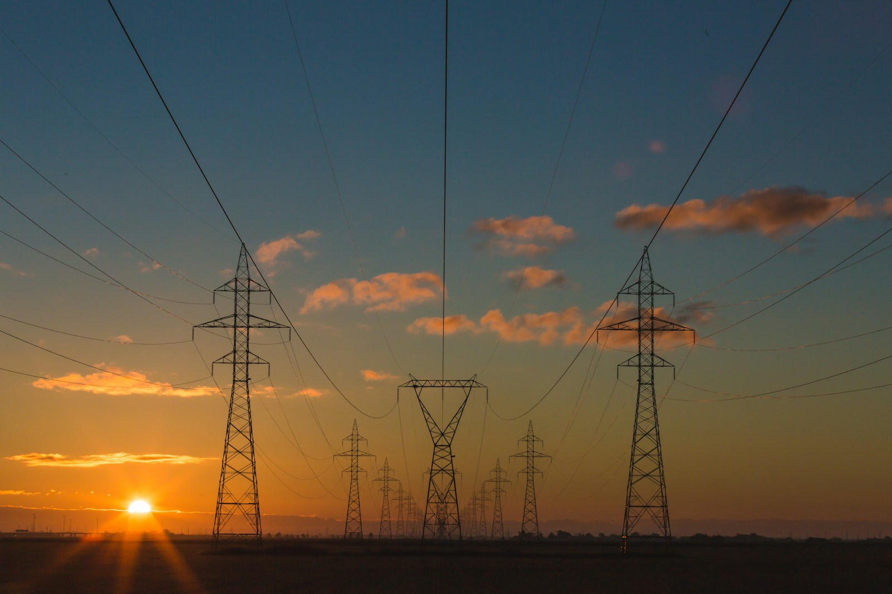

// CASE STUDY · ENERGY
Marketed 15+ product launches and averaged 340 leads a month
Accuenergy makes energy monitoring and power measurement products for commercial, industrial and utility customers. I turned technical products into connected content, campaigns and launches that generated demand and leads across the customer journey.
- Company
- Accuenergy Canada Inc.
- My role
- Digital Marketing Specialist
- Timeline
- April 2025 – May 2026
- Market
- B2B · Energy & utilities

Results
- 15+
- product launches taken to market
- +25%
- website traffic, year over year
- 340
- leads a month, on average
// THE GROWTH ROADMAP
One system, four connected stages
The challenge: Accuenergy's products are technical, and a steady run of launches required accurate, consistent messaging for engineers, facility managers and utilities. I organized the work into four connected stages, from attracting the right buyers to measuring what worked, so each channel appears wherever it contributed.
Build visibility around every product launch
What I did
- Mapped how buyers search and evaluate: combined keyword research, content gap analysis and competitive analysis to identify demand, understand buyer intent and build focused content clusters
- Strengthened on-page and technical SEO: optimized title tags, meta descriptions, heading structure, internal links and image alt text, and added structured data so search engines and AI answers could accurately interpret each product page
- Built a content engine for SEO and AI search: turned audience, keyword and intent insights into coordinated webpages, video scripts, press releases and blog articles
- Accelerated reach from day one: paired Google Ads with SEO so new products reached active buyers immediately while organic visibility grew over time
- Built an always-on social presence: owned the social strategy and annual content calendar across product campaigns, trade shows, industry events and more
Tools
- Semrush
- Google Search Console
- Google Ads
- Google Analytics 4
- WordPress
- HubSpot
- PRWeb
Turn qualified traffic into measurable leads
What I did
- Optimized paid search: segmented campaigns by product and intent, tested ad copy, added negative keywords and used UTMs to track ad performance
- Improved campaign efficiency: adjusted bids, budgets, location targeting, devices and ad schedules based on performance
- Maintained message match: aligned keywords, ad copy, landing-page headlines and calls to action so visitors encountered one consistent promise from search to form
- Built conversion paths: used internal links and focused calls to action to guide visitors from educational content to relevant product and landing pages
- A/B-tested landing pages: tested value propositions, content and proof hierarchy, CTA copy and placement, and form position
Tools
- Google Ads
- WordPress
- HubSpot
- Google Analytics 4
Keep customers and prospects engaged between purchases
What I did
- Segmentation & Personalization: Segmented leads and customers by industry, product interest, and buying stage to deliver relevant messaging and targeted offers.
- Email Campaign Management: Designed HubSpot and Mailchimp campaigns for product launches, newsletters, product highlights, and firmware updates, aligning each send with business goals.
- Marketing Automation: Built HubSpot workflows to nurture leads after form submissions and content downloads, keeping prospects engaged throughout the buying journey.
- A/B Testing & Optimization: Tested subject lines, messaging, visuals, and CTAs to identify winning variations and improve future campaigns.
- Performance Analytics: Tracked engagement, clicks, conversions, and lead generation to refine targeting, content, and campaign strategy.
- Email Deliverability & List Management: Maintained contact lists, managed unsubscribes, and monitored bounce rates to improve list health and email deliverability.
Tools
- HubSpot
- Mailchimp
Connect marketing activity to business outcomes
Focus
- Web analytics
- Conversion tracking
- Campaign reporting
- Executive reporting
What I did
- Tracked buying-intent actions: measured quote requests, calls and datasheet downloads so reporting reflected meaningful conversion behaviour, not traffic alone
- Built a unified performance view: combined website, paid search, email, social and lead data into monthly reporting
- Turned reporting into action: presented results and recommendations to the executive team so priorities and investment could follow performance
Tools
- Google Analytics 4
- Google Search Console
- Google Ads
- HubSpot